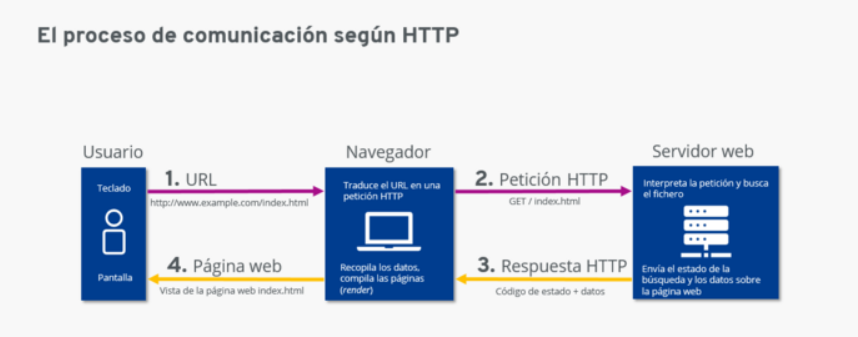

El perfil back-end es el que cuenta con mayor especialización técnica del lado del servidor. El programador de back-end tiene que saber lenguajes de programación como ASP.NET, PHP, Python, Ruby, Node.js o Java etc. También debe estar familiarizado con las bases de datos como MySQL, SQL Server, PostgreSQL, Oracle o MongoDB.
El desarrollador front-end que se encarga de la parte visual, domina lenguajes como HTML/CSS, javaScript y que se encarga de escribir un código mantenible y mejora a su vez la experiencia del usuario.
El programador full-stack es multiusos . que domina las dos partes de un desarrollo web, es decir, tanto los aspectos del front end, la parte visual con la que el usuario puede interactuar, como los del back end, la gestión interna de la página y de la comunicación entre el navegador y la base de datos.
Los servidores web (web server) son un componente de los servidores que tienen como principal función almacenar, en web hosting, todos los archivos propios de una página web (imágenes, textos, videos, etc.) y transmitirlos a los usuarios a través de los navegadores mediante el protocolo HTTP (Hipertext Transfer Protocol). En otras palabras, es el software que permite que los usuarios que quieren ver una página web en su navegador puedan hacerlo.
Hay muchos servidores web yo conozco Servidor Apache HTTP,Microsoft IIS y Servidores virtuales. la deferencia entre ellos es que Servidor Apache es de código abierto y gratuito tambien es compatible con casi todas las sistemas operativos, es muy conocido y el mas utilizado pero Microsoft IIS solo funciona para sistemas Windows y permite convertir una computadora en un servidor web a menor escala. y Servidores virtuales te brindan la posibilidad de optimizar costos en hardware, puesto que otorgan flexibilidad para accionar varios sistemas operativos y programas a la vez.
HTTP son las siglas de Hypertext Transfer Protocol, es decir, Protocolo de Transferencia de Hipertexto.
1.cuando el usuario teclea ejemplo.com en el navegador. 2.El navegador envía esa solicitud, es decir, la petición HTTP, al servidor web que administre el dominio ejemplo.com. 3.El servidor web recibe la solicitud HTTP, busca el archivo ejemplo.com, que corresponde al archivo index.html y envía en primer lugar una cabecera o header. Esta cabecera le comunica al cliente, mediante un código de estado, el resultado de la búsqueda. 4.Si se ha encontrado el archivo solicitado y el cliente ha solicitado recibirlo (y no solo saber si existe), el servidor envía, tras el header, el message body , es decir, el contenido solicitado: el archivo index.html. 5.El navegador recibe el archivo y lo abre en forma de página web.
